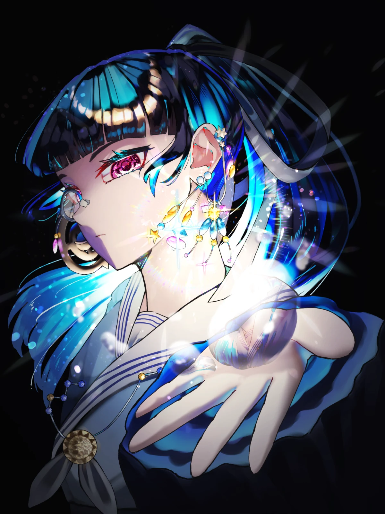
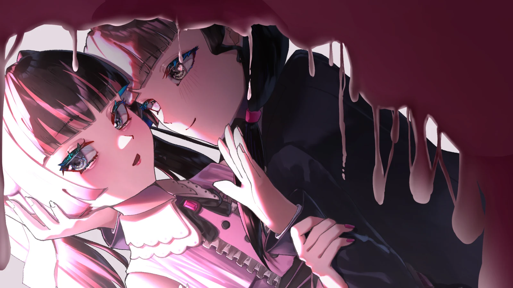
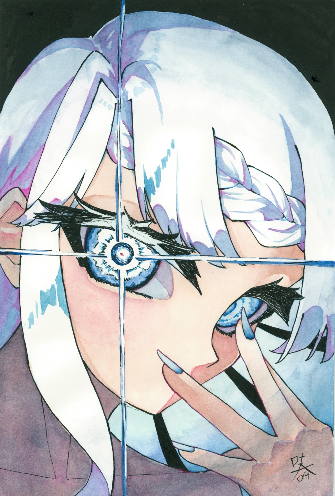

水とトパーズの耳飾り
2026年8月に制作。叶奏の象徴となるようなイラストを目指し、名刺その他で使えるように作成。光の演出にこだわっています。
物語の一瞬を切り取ったようなイラストを目指し、描いています。
光と影によるコントラスト強めの作品を描くことが多いです。鮮やかで輝いている自然物を描くのが好きです。

2026年8月に制作。叶奏の象徴となるようなイラストを目指し、名刺その他で使えるように作成。光の演出にこだわっています。

2026年7月に制作。イラストから音楽へ繋げるボカリレーという企画に参加するために作成。様々な解釈ができるよう端々に仕込みをしています。

2025年12月に制作。アナログ（透明水彩メイン）で作成。コントラスト差を意識しました。2025年に参加したコミケで原画を友人のスペースに置かせてもらい、買っていただけました。